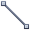
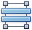

Report Controls
The documents in this section describe options of each report control available in the Report Designer.
In general, report controls allow you to represent information of different kinds (e.g. simple or formatted text, pictures, tables, etc.) in you report both static and dynamic, and to adjust your report's layout (by organizing controls within panels, and inserting page breaks at the required positions).
In the Report Designer, the available controls are listed in the Control Toolbox from which they are dropped onto the required bands.
You also can extend the standard functionality of each control by writing scripts for its available events.
This document consists of the following sections.
Available Controls
The following table lists the available controls (in the same order as in the Control Toolbox). For each control's options description, refer to the corresponding document.
| Icon | Control | Description |
|---|---|---|
 |
Label | The most basic Label control is intended to display text in your report. It can represent static or dynamic text, or both. In addition, it can be used to calculate standard summary functions across a data field. The Label's text can only be formatted as a whole. So, if it's required to differently format parts of text, use the Rich Text control. |
 |
Character Comb | The Character Comb control displays text so that each character is printed in an individual cell. |
 |
Check Box | The Check Box control is intended to display True/False or Checked/Unchecked/Indeterminate states in a report, by displaying (or not) a check mark, which can be accompanied by a text description. |
 |
Rich Text | The Rich Text control allows you to display formatted text in your report. It can represent static or dynamic text, or both. You can load content to the Rich Text from an external TXT or RTF file (which can also contain images) and then format any part of it. The formatting options include font face, styles and sizes, and color. |
| Picture Box | The Picture Box control is intended to display images of numerous formats in a report. An image can be loaded from an external file, from a bound data source, or from a web location using the specified URL. | |
 |
Panel | The Panel control is a container that frames separate report controls to allow them to be easily moved, copied and pasted, and visually unite them in the report's preview (with borders or a uniform color background). |
| Table | The Table control is designed to arrange information in a tabular layout. It may contain any number of Rows comprised of individual Cells. Both Rows and Cells can be selected and customized individually. In most aspects, a Cell is similar to a Label, but can also contain other controls (e.g. Picture Box or Rich Text). | |
|  | Line | The Line control draws a line of a specified direction, style, width and color. It can be used for both decoration and visual separation of a report's sections. The Line cannot cross bands, as opposed to the Cross-band Line control. |
 |
Shape | The Shape control allows you to embed simple graphic objects into your report. You can choose one of multiple predefined shapes (e.g. rectangles, ellipses, arrows, polygons, crosses and brackets of various kinds). |
 |
Bar Code | The Bar Code control transforms its content into a bar code of the specified type. Multiple standard bar code symbologies are supported. |
 |
Zip Code | The Zip Code control renders a numeric postal code that is used to identify the mail address in some countries. This control is not related to the Zone Improvement Plan (ZIP) code used by the United States Postal Service. |
 |
Chart | The Chart is a sophisticated control used to embed graphs into your report. It graphically represents a series of points using numerous 2D or 3D chart types. A Chart can be populated with points both manually (by specifying arguments and values for each point) and dynamically (by connecting it to the report's data source, or binding it to a separate one). |
 |
Gauge | The Gauge control provides you with the capability to embed graphical gauges into your report. |
 |
Sparkline | The Sparkline control displays a compact chart that is commonly used to reflect the flow of data for every row in a report. |
 |
Pivot Grid | The Pivot Grid control represents dynamic data (obtained from an underlying data source) in a cross-tabulated form to create cross-tab reports, similar to Pivot Tables in Microsoft Excel®. Column headers display unique values from one data field, and row headers - from another field. Each cell displays a summary for the corresponding row and column values. By specifying different data fields, you can see different totals. This allows you to get a compact layout for a complex data analysis. |
 |
Page Info | The Page Info control is intended to add page numbers and system information (the current date and time or the current user name) into your report. As with many other controls, you can format this control's content. |
| Page Break | The Page Break control's sole purpose is to insert a page delimiter at any point within a report. | |
 |
Cross-band Line | The Cross-band Line control allows you to draw a line through several bands. This can be useful if it is required to visually emphasize a section consisting of multiple band areas. In other aspects, it is similar to a regular Line. |
|  | Cross-band Box | The Cross-band Box control allows you to draw a rectangle through several bands. This can be useful if it is required to visually encompass a section consisting of multiple band areas. |
 |
Table of Contents | The Table of Contents control generates a table of contents based on bookmarks specified for report elements. |
 |
Subreport | The Subreport control allows you to include other reports in your current report. |
Add Controls to a Report
To create a control, drag it from the Toolbox panel onto the report area.

To automatically create a control bound to data, drag a field from the Field List panel, and drop it onto a report's surface. When dropping a field onto an existing control, this control will be bound to the data field.

If you drag the field with the right mouse button, when the button is released the context menu is invoked. Use this menu to specify which control should be created.

To learn more on data binding for report controls, refer to Displaying Values from a Database (Binding Report Elements to Data).
Note
When controls overlap, the report may be shown incorrectly when exported to some formats. Red markers and a report tooltip will warn of this situation. You may switch off the red warning marks via the report's Show Export Warnings property.

To learn how report controls can be relocated and resized, refer to Change the Layout of Report Elements and Controls Positioning.